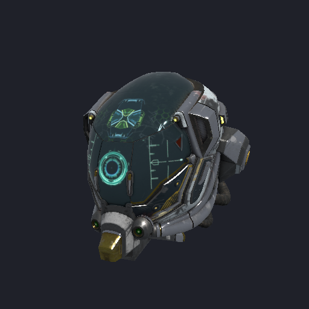

Hecho con Eskiu
Programas que ya corren: un modelo de lenguaje en la GPU, un visor de modelos 3D, un demo de realidad aumentada en una consola portátil, módulos dentro de un motor de renderizado en producción y el mismo compilador.
Llama 2 sobre Metal
examples/llama2.esk, en el paquete gpu, hace
inferencia de Llama 2 siguiendo el llama2.c de Andrej Karpathy. Lee checkpoints de
llama2.c, archivos GGUF de llama (Q4_0 y Q8_0 corren cuantizados en la GPU) y directorios
de modelos de Hugging Face con safetensors, y corre en la GPU con WebGPU, que en una Mac es
Metal:
eskiuc build -L/opt/homebrew/lib && ./build/llama2 llama-2-7b.Q4_0.gguf -t 0 -i "The capital of France is"| Modelo | Eskiu | Referencia |
|---|---|---|
| stories110M (llama2.c, f16) | 350 tokens/s | llama2.c en el CPU: 22 tokens/s |
| TinyLlama 1.1B Q4_0 (GGUF) | 178 tokens/s | llama.cpp (Metal): 260 tokens/s |
| Llama 2 7B Q4_0 (GGUF) | 45 tokens/s | llama.cpp (Metal): 58 tokens/s |
Medido en un Apple M4 Pro con decodificación greedy. En los prompts que se probaron, la
salida coincide byte por byte con la de llama2.c, y token por token con la de llama.cpp y
la de Hugging Face transformers. El forward pass es un programa de operaciones de
<gpu/nn> que se graba una vez y se repite como un solo compute pass por
token.
El mismo paquete entrena redes: examples/mnist.esk entrena con
<gpu/train> una red de dos capas sobre MNIST hasta 97% de precisión en
tres épocas, y guarda los pesos como safetensors, que PyTorch carga con la misma precisión.
Un visor de glTF y OBJ con PBR

examples/model.esk, en el paquete gpu, abre archivos glTF 2.0
(.gltf y .glb) y OBJ de Wavefront en una ventana: arrastras para
girar alrededor del modelo, con la rueda haces zoom y la barra espaciadora pausa la
animación. <gpu/model> sombrea con el modelo metallic-roughness de glTF
bajo una luz direccional y un término de luz ambiental hemisférica, con normal maps, modos
de alpha, skinning y animación. El mismo código corre sobre Metal, Vulkan y DirectX 12.
Un demo de realidad aumentada en la Nintendo 3DS

Un demo de realidad aumentada con cámara y giroscopio mantiene un modelo 3D fijo sobre la imagen en vivo de la cámara. Su lógica está escrita en Eskiu y compilada para el ARM11 de 32 bits de la consola, y el renderizado pasa por ViroCore sobre citro3d. Se probó en una 3DS real.
Lee el caso de estudio de la 3DS →
ReactVision
ReactVision desarrolla ViroCore, el motor nativo de renderizado de AR/VR detrás de
@reactvision/react-viro en iOS, Android, Meta Quest y visionOS. El equipo
reemplaza componentes de C++ sensibles a la memoria con módulos en Eskiu que se enlazan por
la ABI de C, un módulo a la vez, sin tocar el resto del motor. Los módulos de renderizado
que ya se migraron usan alrededor de 85% menos memoria.
Lee el caso de estudio de ReactVision →
El compilador, escrito en Eskiu
Eskiu tiene dos implementaciones de su compilador. El eskiuc que se publica
está escrito en C++ y enlaza LLVM. La segunda, en selfhost/, está escrita en
Eskiu: cubre el mismo pipeline y la misma línea de comandos, escribe el IR de LLVM como
texto y llama a clang para ensamblarlo y enlazarlo. CMake la compila como
eskiuc-esk, y el CI revisa que los dos compiladores coincidan en cada programa
ejecutable de las pruebas.
preprocessor → lexer → parser → sema → async lowering → codegen (LLVM IR text) → clang
También se revisa contra sí mismo. El eskiuc de C++ compila cc0,
cc0 compila cc1 y cc1 compila cc2; el
bootstrap llega a un punto fijo cuando cc1 y cc2 generan el mismo
IR para el código fuente del compilador.